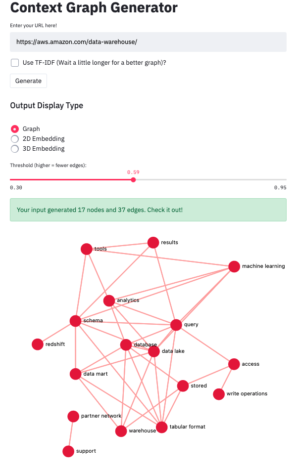
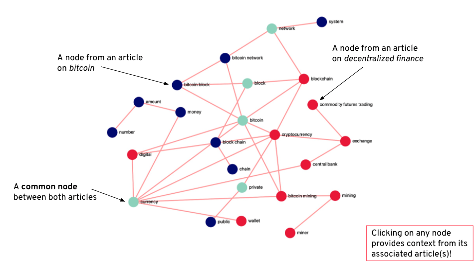
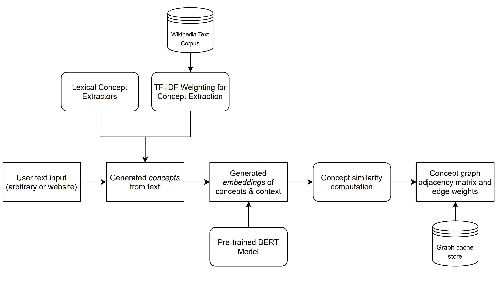

Building a Context Graph Generator
The Team
- Manan Shah
- Lauren Zhu
- Ella Hofmann-Coyle
- Blake Pagon
Problem Definition
Get this—55% of users read online articles for less than 15 seconds. The general problem of understanding large spans of content is painstaking, with no efficient solution.
Current attempts rely on abstractive text summarization, which simply shortens text to its most relevant sentences and often obscures core components that make writing individual and meaningful. Other methods offer a smart search on articles, a sort of smart command+F. But that forces the user to not only look at only small bits and pieces of content at a time, but also know what they’re looking for ahead of time.
What if, rather than engaging in this lengthy process of understanding content manually, people can leverage a tool that generates analytical, concept graphs over text? These graphs would provide the first-ever standardized, structured, and interpretable medium to understand and draw connections from large spans of content. We created such an interface where users are able to visualize and interact with the key concepts over swaths of text in a meaningful and unique way. Users can even compare and contrast concept graphs between multiple articles with intersecting concepts, to further their analysis and understanding.
So with users spending less time on individual websites, we make it easier for them to absorb the key components of the content they want in an interactive graphical representation. Specifically, we enable readers to:
- Grasp the main concepts presented in an article
- Understand the connections between topics
- Draw insights across multiple articles fluidly and intuitively
System Design
Graph Generation

With the goal of making information digestion faster, we designed a concept graph generator that includes relevant information on a text’s main concepts and visually shows how topics relate to one another. To achieve this, our graph outputs nodes that represent article concepts, and edges that represent links between the concepts.
We use Streamlit for the front end interface and a custom version of the Streamlit graphing libraries to display our graphs. The resulting graphs are interactive—users can move the graph and individual nodes as well as zoom in and out freely, or click a node to receive a digest of the topic in textual context.
Additionally, we provide users with a threshold slider that allows users to decide how many nodes/connections they want their graph to provide. This customization doubles as an optimization for the shape and density of the graph. How this works is that connections between nodes are determined by a similarity score between the nodes (via cosine similarity on the word embeddings). A connection is drawn between two topics if the score is above the threshold from the slider. This means that as the slider moves further to the left, the lower threshold makes the graph generate more nodes, and the resulting graph would be more dense.
Working with Multiple Graphs
Beyond generating graphs from a single text source, users can combine graphs they have previously generated to see how concepts from several articles interrelate. In the below example, we see how two related articles interact when graphed together. Here we have one from the Bitcoin Wikipedia page and the other from the Decentralized Finance page. We can distill from a quick glance that both articles discuss networking, bitcoin, privacy, blockchain and currency concepts (as indicated by green nodes), but diverge slightly as the Bitcoin article focuses on the system specification of Bitcoin and the Decentralized Finance article talks more about impacts of Bitcoin on markets. The multi-graph option allows users to not only assess the contents of several articles all at once with a single glance, but also reveals insights on larger concepts through visualizing the interconnections of the two sources. A user could use this tool to obtain a holistic view on any area of research they want to delve into.

Visual Embedding Generation

An additional feature our system provides is a tool to plot topics in 2D and 3D space to provide a new way of representing topic relations. Even better, we use the Poltly library to make these plots interactive! The embedding tools simply take the embedding that corresponds to each topic node in our graph and projects it into 2D space. Topic clustering indicates high similarity or strong relationships between those topics, and large distances between topics indicates dissimilarity. The same logic applies to the 3D representation; we give users the ability to upgrade their 2D plots to 3D, if they’re feeling especially adventurous.
Deployment and Caching
We deployed our app on the Google Cloud Platform (GCP) via Docker. In particular, we sent a cloud built docker image to Google Cloud, and set up a powerful VM that launched the app from that Docker image. For any local updates to the application, redeploying was quite simple, requiring us to rebuild the image using Google Cloud Build and point the VM to the updated image.
To speed up performance of our app, we cache graphs globally. Let’s say you are trying to graph an article about Taylor Swift’s incredible Folklore album, but another user had recently generated the same graph. Our caching system ensures that the cached graph would be quickly served instead of being re-generated, doing so by utilizing Streamlit’s global application cache. Our initial caching implementation resulted in User A’s generated and named graphs appearing in a User B’s application. To fix this, we updated each user’s session state individually instead of using one global state over all users, therefore preventing User A’s queries from interfering with User B’s experience.
Our Backend: Machine Learning for Concept Extraction and Graph Generation
Our concept graph generation pipeline is displayed in Figure 1. Users are allowed to provide either custom input (arbitrarily-formatted text) or a web URL, which we parse and extract relevant textual information from. We next generate concepts from that text using numerous concept extraction techniques, including TF-IDF and PMI-based ranking over extracted n-grams: unigrams, bigrams, and trigrams. The resulting combined topics are culled to the most relevant ones, and subsequently contextualized by sentences that contain the topics. Finally, each topic is embedded according to its relevant context, and these final embeddings are used to compute (cosine) similarities. We then define edges among topics with a high enough similarity and present these outputs as a graph visualization. Our primary machine intelligence pipelines are introduced in (1) our TF-IDF concept extraction of relevant topics from the input text and (2) our generation of BERT embeddings of each topic using the contextual information of the topic within the input text.

Pipeline Illustration: A diagram of our text-to-graph pipeline, which uses machine intelligence models to extract concepts from an arbitrary input span of text.
Our concept extraction pipeline started with the most frequent unigrams and bigrams present in the input text, but we soon realized that doing so populated our graph with meaningless words that had little to do with the article and instead represented common terms and phrases broadly used in the English language. Although taking stopwords into account and further ranking bigrams by their pointwise mutual information partially resolved this issue, we were unable to consistently obtain concepts that accurately represented the input. We properly resolved this issue by pre-processing a large Wikipedia dataset consisting of 6 million examples to extract “inverse document frequencies’’ for common unigrams, bigrams, and trigrams. We then rank each topic according to its term frequency-inverse document frequency (TF-IDF) ratio, representing the uniqueness of the term to the given article compared to the overall frequency of the term in a representative sample of English text. TF-IDF let us properly select topics that were unique to the input documents, significantly improving our graph quality.
To embed extracted topics, we initially used pre-trained embeddings from GloVe and word2vec. Both of these algorithms embed words using neural networks trained on context windows that place similar words close to each other in the embedding space. A limitation with these representations is that they fail to consider larger surrounding context when making predictions. This was particularly problematic for our use-case, as using pre-trained context-independent word embeddings would yield identical graphs for a set of concepts. And when we asked users to evaluate the quality of the generated graphs, the primary feedback was that the graph represented abstract connections between concepts as opposed to being drawn from the text itself. Taking this into account, we knew that the graphs we wanted should be both meaningful and specific to their input articles.
In order to resolve this issue and generate contextually-relevant graphs, we introduced a BERT embedding model that embeds each concept along with its surrounding context, producing an embedding for each concept that was influenced by the article it was present in. Our BERT model is pre-trained on BookCorpus, a dataset consisting of 11,038 unpublished books and English Wikipedia (excluding lists, tables and headers). We used embeddings from the final layer of the BERT model—averaged across all WordPiece-split tokens describing the input concept—to create our final 1024-dimensional embeddings for each concept. We implemented caching mechanisms to ensure that identical queries would have their associated embeddings and adjacency matrices cached for future use. This improves the efficiency of the overall process and even guarantees graph generation completes in under 30 seconds for user inputs of reasonable length (it’s usually faster than that).
System Evaluation
Since we are working with unstructured data and unsupervised learning, we had to be a little more creative in how we evaluated our model’s performance. To start, we created a few metrics to gather for generated graphs that would help us better quantify the performance of our system. The metrics include:
- The time to generate a novel, uncached graph
- The number of nodes and edges generated, along with average node degree
- Ratings of pop-up context digest quality
- An graph-level label of whether it is informative overall
- The number of generated topics that provide no insight
- The number of topics that are substrings of another topic
When designing metrics to track, our main goal was to capture the utility of our app to users. The runtime of graph generation is paramount, as users can easily grow impatient with wait times that are too long. The number of nodes shows how many topics we present to the user, the number of edges indicates how many connections our tool is able to find, and the average degree captures the synergy between those two. The pop-up context digests can either provide useful or irrelevant additional information. Having a general sense for the overall quality of information in graphs is important to note. Nodes generated based on irrelevant topics waste users’ time, so we want to minimize that. Similarly, nodes with topics that are substrings of other topics in the graph are also unwanted, as they indicate redundant information in our graph.
With our metrics defined, we began generating graphs and annotating them by hand. We found that the average graph takes 20.4 seconds to generate and has 13.27 nodes and 13.55 edges, leading to an average node degree of 1.02. Overall, we are happy with the graph generation time that we measured — 20 seconds is a reasonable expectation for our users, especially considering we are not currently using a GPU. On average, we found that the graphs were informative 68% of the time. The times that they were not were caused either by too high of a threshold or poor topic generation. In particular, we noticed that performance was poor on articles that covered many different areas of a topic, such as articles discussing matchup predictions for March Madness. While the overarching theme of college basketball was the main focus of those articles, they discussed many different teams, which led the model to have a tough time parsing out common threads, such as the importance of an efficient offense and lockdown defense on good teams, throughout the article.
Our default graph generation uses a threshold of 0.65 for the cosine similarity between topics to form an edge between them. For reference, we also tested our graph generation with thresholds of 0.6 and 0.7 for the edge cosine similarity and found that they yielded an average node degree of 1.71 and 0.81, respectively. An average node degree of 1.71 is too high and floods the user with many frivolous connections between topics. An average node degree of 0.81, on the other hand, doesn’t show enough of the connections that actually exist between topics. Therefore, a threshold of 0.65, with an average node degree of 1.02, provides a nice balance between topics presented and the connections between them.
As for the errors we were scanning for, we found that on average, 12.33% of nodes in every graph were topics that added nothing and 17.81% of nodes were simply substrings of another topic in the graph. Therefore, about 69.86% of the nodes that we present to users are actually relevant. This tells us that users on our site may spend some time sifting through irrelevant topics, which we hope to improve in the future. We additionally rated the quality of the contextual information displayed in each node’s pop-up digest window, and found that (on a scale of 0-1) our ratings averaged 0.71. This was largely caused by lack of sufficient filtering applied to the sentences displayed. Filtering and curation heuristics for these digests is another potential area of growth.
Application Demonstration
Interested users should visit our application at this URL, where they are presented with a clean, simple, and intuitive interface that allows them to either (a) input custom text to graph, (b) input a web URL to graph, or (c) generate a combined graph from two of their previously saved graphs. Upon entering custom text or a web URL, users are shown a progress bar estimating the time of graph generation (or an instant graph if the query has been cached from previous uses of the website). Generated graphs are interactive, allowing users to click on nodes to see the context in which they appear in the input document. We also present other modes of visualization, including a 2D and 3D PCA-based embedding of the concepts, which provide a different perspective of relationships between concepts. Users can also save graphs locally (to their local browser cache), and subsequently combine them to link concepts together across numerous distinct documents.
Our team chose to use a web interface as it proved to be the most intuitive and straightforward way for users to provide custom input and interact with the produced graphs. We implemented our own customizations to the Streamlit default graphing library (in this fork) to enable enhanced interactivity, and we employed Streamilit to ensure a seamless development process between our python backend and the frontend interface.
Watch us demo our platform and give it a try !
Reflection
What worked well?
We had such a rewarding and exciting experience this quarter building out this application. From day one, we were all sold on the context graph idea and committed a lot of time and energy into it. We are so happy with the outcome that we want to continue working on it next quarter. We will soon reach out to some of the judges that were present at the demo but didn’t make it to our room.
While nontrivial, building out the application was a smooth process for several reasons: technical decisions, use of Streamlit, great camaraderie. Let’s break these down.
Our topic retrieval process is quite simple, with the use of highest frequency n-grams weighted by PMI scores, with n={1,2,3}. TF-IDF was a good addition to topic filtering (the graphs were more robust as a result), but because it was slower we added it as a checkbox option to the user. Sentence/context retrieval required carefully designed regular expressions, but proved to work incredibly efficiently once properly implemented. We then had to shape the topics and contexts correctly and after passing them through BERT, compute cosine similarities. For displaying graphs, we utilized a Streamlit component called streamilt-agraph. While it had all the basic functionality we needed, there were things we wanted to add on top of it (e.g. clicking on nodes to display context), which required forking the repo and making custom changes on our end.
Due to the nature of our project, it was pretty feasible to build out the MVP on Streamlit and iterate by small performance improvements and new features. This made individual contributions easy to line up with Git issues and to execute on different branches. It also helped that we have an incredible camaraderie already, as we all met in Stanford’s study abroad program in Florence in 2019.
What didn’t work as well?
To be honest, nothing crazy here. We had some obscure bugs from BERT embeddings that would occur rarely but at random, as well as graph generation bugs if inputs were too small. We got around them with try/catch blocks, but could have looked into them with a little more attention.
If we had unlimited time & unlimited resources…
Among the four of us, we made our best guesses as to what the best features would be for our application. Of course if time permitted, we could conduct serious user research about what people are looking for, and we could build exactly that. But apart from that, there are actual action items moving forward, discussed below.
We wanted to create an accessible tutorial or perhaps some guides either on the website or an accessible location. This may actually no longer be necessary because we can point to the tutorial provided in this blog (see Application Demonstration). We saw in many cases that without any context of what our application does, users may not know what our app is for or how they could get the most out of it.
On top of this, future work includes adding a better URL (i.e. contextgraph.io), including a Chrome extension, building more fluid topic digests in our pop-ups, and submitting a pull request to the streamlit-agraph component with our added functionality—in theory we could then deploy this for free via Streamlit.
Broader Impacts
Context Graph Generator Impacts:
-
Summarization: Our intuitive interface combined with robust graph generation enables users to understand large bodies of text with a simple glance.
-
Textual Insights: The extensive features we offer from multi-graphing to TF-IDF topic generation to context summarization for each node enables users to generate analysis and insights for their inquiries on the fly.
Our aim in creating this tool is to empower individuals to obtain the information they need with ease, so they are empowered to achieve their goals at work or in their personal lives. Whether the user has to synthesize large amounts of information for their business or simply seek to stay informed while on a busy schedule, our tool is here to help!
When considering the ethical implications of such a tool, it becomes apparent that while a context graph largely positively impacts users, it’s important to consider how it could become a weapon of misinformation. When a user provides text for the graph generator to analyze, we do not perform fact checking of the provided text. We believe this is reasonable considering that our platform is an analysis tool. Additionally, because we are also operating only natively within our site and graphs are not shareable, there is no possibility of a generated graph object being shared to inform others (one could take a screenshot of the graph, however, most detailed information is embedded in the nodes’ pop-up). If we were to make graphs shareable or integrate our tool into other platforms, we run the risk of being a tool of misinformation if users were to share graphs that help people quickly digest information. As we continue to work on our platform, we will keep this scenario top of mind and work to find ways to prevent such an outcome.
Contributions
- Blake: Worked on generating PCA projection plots from embeddings, saving graphs, graph combination, and Streamlit UI.
- Ella: Worked on graph topic generation (primarily TF-IDF & data processing), reducing skew in embeddings of overlapping topics, and Streamlit UI
- Lauren: Worked on graph topic generation, GCP deployment, and Streamlit UI
- Manan: Worked on graph topic generation, embedding and overall graph generation, streamlit-agraph customization for node popup context digests, and Streamlit UI
References
Our system was built using Streamlit, Plotly and HuggingFace’s BERT model. To deploy our system, we used Docker and GCP.
We utilized the Tensorflow Wikipedia English Dataset for IDF preprocessing as well.